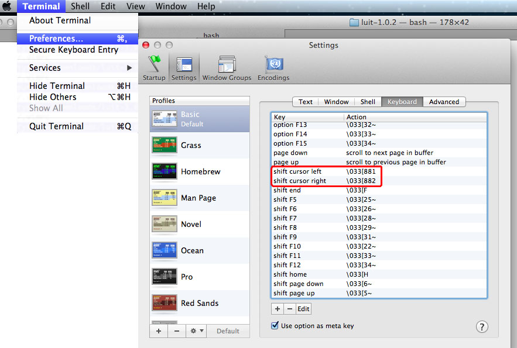

過去幾年一直有看到其它軟體工程師使用 MacBook 開發，而我卻因為一直沒有勇氣變更 Windows 的使用習慣，所以一直遲遲不願意嘗試，現在我終於買了我人生中的第一台 MAC ，雖然這台 MAC 是買給老婆使用的，我只是有空時拿來試玩，先說明一下，在不能外接滑鼠與鍵盤的狀況下， MacBook 真的是不錯用。
接下來就記錄一些從 window 轉換到 MacBook 的相關設定與快捷鍵介紹。
一般快捷鍵
下面的 『⌘』代表MacBook 空白鍵左邊的第一顆按鍵(command)，『→』代表右方向鍵，『←』代表左方向鍵，『↑』代表上方向鍵，『↓』代表下方向鍵。
- shift+⌘+3 ：擷取圖片，將螢模擷取下來，存到桌面。
- ⌘ + →(←)：切換桌面。
- ⌘+r ：Browser 重新整理
- ctrl+a ：移到此行的起點，等同 windows home 按鍵
- ctrl+e ：移到此行的終點，等同 windows end 按鍵
- ctrl+b , fn + ↑ ： 移到上一頁，等同 windows pageUp 按鍵
- ctrl+f , fn + ↓：移到下一頁，等同 windows pageDown 按鍵
screen 中文亂碼
使用 screen 時，參數要多帶 -U ，代表我要使用 UTF-8 編碼，過去在使用 Window Putty 時，就算沒有加 -U 中文也能正常顯示，但是到了 MacBook 就有點不同了， 「-U」是不可少的。
- screen -Ur screenname
Terminal 設定
一開始要先從 Menu bar 中選擇 Terminal -> preference ，然後在 Shell open with 中選擇 /bin/bash，這樣就可以使用 bash 的一些快捷鍵設定。
接著設定按鍵的 Repeat 速度，因為使用 Terminal 時，常常要按住左右鍵來移動遊標，如果 Repeat 的速度太慢的話，光是移動 10 個字元，就會等到吐血了。
先從 Menu bar 中打開 System Preference
將 key repeat 調到最高，delay util repeat 調到最短
Terminal Shortcut
切換 Tab，在 Termial Menu bar 的 Window 有提示切換 Tab 的快捷鍵是 「⌘+{」, 「⌘+}」 ，但是真正使用必需多按 shift 鍵。
- shift+⌘+[：左移一個 Tab
- shift+⌘+]：右移一個 Tab
在 Linux Console 預設就有 Home ,End 的熱鍵，不過要同時按三個鍵才能使用，在下半段的熱鍵設定中，會說明如何使用 fn + 左右鍵來控制 Home ,End 的功能。
- ⌘+alt + ← ：移到此行的起點，等同 windows home 按鍵
- ⌘+alt + → ：移到此行的終點，等同 windows end 按鍵
修改 vim shortcut (shift)
為了加速 Vim 的功能，我習慣加入一堆熱鍵，但是試過在 .vimrc 中加入 ＜S-Left>, ＜S-Right>等等的快捷鍵，不過這些都失敗了，後來才發現現，Ctrl , Shift , Command, Alt ，這幾個補助鍵，必須先在 Terminal Preference 中先進行設定，設定完成之後，才能在 vimrc 中做 mapping。
首先在 Terminal → Preferences → Keyboard → 點擊增加熱鍵，下圖的範例中，我設定 Shift+「左方向鍵」輸出 \033[881，以及 Shift+「右方向鍵」輸出 \033[882 ，「\003」是 「ESC」的意思 。
設定好之後，最後在 vimrc 中加入 「＜ESC>[881」，「＜ESC>[882」 的對應行為，這裡我設定成切換 vim 的上下 Tab。
- map <ESC>[881 :tabp<CR> " shift + left , move to previous tab
- map <ESC>[882 :tabn<CR> " shift + right , move to next tab
設定完成之後，就可以使用 「Shift + ←」來左移一個 vim 的 Tab，以及「Shift + →」來右移一個 vim 的 Tab。
vim 的 PageDown , PageUp, Home, End
如何啟用 Vim 的 PageDown , PageUp , Home ,End 呢，第一次用 Mac Terminal 時，因為沒有切換上下頁與移至結尾、開頭的按鈕，在操作 Vim 時會非常的辛苦，而啟用這些功能的方式其實很簡單，先打開 Terminal → Preference → KeyBoard ，接著修改預設的熱鍵 Home, End, PageUp, PageDown ，點擊修改，並將 action 改成 「Send string to shell:」，最後在空白框中輸入以下的設定 (\003 要輸入 ESC 鍵)。
- Home: \033[1~
- End: \033[4~
- PageUp: \033[5~
- PageDown: \033[6~
設定完成後，就可以使用下列熱鍵
- fn+上 ： 上一頁
- fn+下 ： 下一頁
- fn+左 ： 移至開頭
- fn+右 ： 移至結尾
SCREEN 設定
增加 Screen 熱鍵，「Ctrl+左方向鍵」，「Ctrl+右方向鍵」對應 screen window 切換 ，從 Terminal preference keybord 中可以看到 ctrl+left 與 ctrl+right 的輸出值為 \033[5D 與 \033[5C，所以我加入以下的設定。
- bindkey \033[5D prev #ctrl + left , move to previous window
- bindkey \033[5C next #ctrl + right , move to next window
查詢 Linux 熱鍵： bind -P | grep not -v